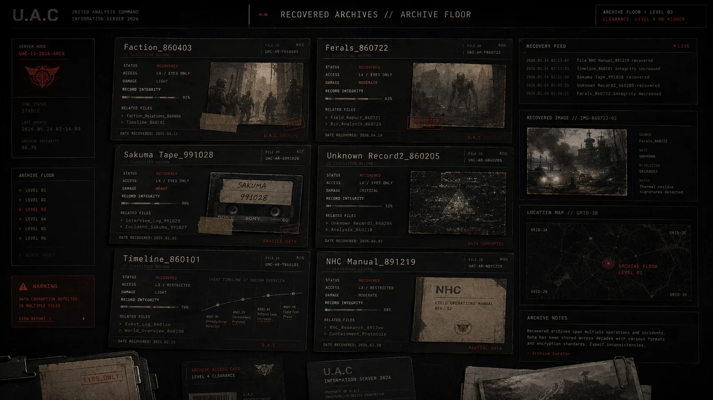

Unknown Record1_860204
아마리온 관련 회수 영상, 생체 복원, 기업 연구 흔적.
VISUAL RECORD CACHE

RELATED FILES // QUICK ACCESS
압축 분류
STATUS: PARTIAL / ACCESS: CLASSIFIED / DAMAGE: 41%. 관련 태그는 RECOVERY, AMARION, BIO-RESEARCH로 묶이며, 이 기록은 U.A.C 정보 서버에서 긴 원문 대신 현장 열람용 요약 파일로 우선 표시된다.
회수 영상
아마리온 회수 기록은 의료 기업 문서처럼 보이지만, 생명 연장·세포 재구성·괴이 유래 물질 연구 흔적을 포함한다.
기업 연결
공식 제약 연구와 비인가 생체 병기 연구의 경계가 흐려진다.
RELATED FILES
EXTENDED RECORD
OPEN EXTENDED RECORD
Unknown Record1_860204는 아마리온 회수 영상 기록에서 파생된 서버 열람용 확장 기록이다. 현재 상태는 PARTIAL, 접근 권한은 CLASSIFIED, 기록 손상도는 41%로 표시된다. 핵심 태그는 RECOVERY, AMARION, BIO-RESEARCH이며, 이 기록은 요약본을 먼저 보여준 뒤 필요한 경우 상세 블록을 펼쳐 읽는 구조로 정리되었다. [압축 페이지] - 압축 분류: STATUS: PARTIAL / ACCESS: CLASSIFIED / DAMAGE: 41%. 관련 태그는 RECOVERY, AMARION, BIO-RESEARCH로 묶이며, 이 기록은 U.A.C 정보 서버에서 긴 원문 대신 현장 열람용 요약 파일로 우선 표시된다. - 회수 영상: 아마리온 회수 기록은 의료 기업 문서처럼 보이지만, 생명 연장·세포 재구성·괴이 유래 물질 연구 흔적을 포함한다. - 기업 연결: 공식 제약 연구와 비인가 생체 병기 연구의 경계가 흐려진다. [서버 해석] 이 문서는 독립된 설정글이 아니라 세계 현황, 세력 관계, 구역 위험도, 회수 기록과 연결되는 노드로 취급된다. 관련 기록을 함께 열람하면 사건의 원인, 현장 대응, 오염 확산, 기록 손상 여부를 더 쉽게 추적할 수 있다.